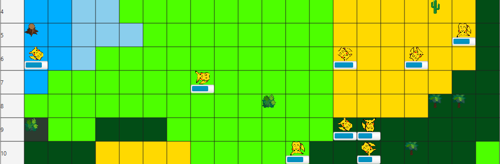
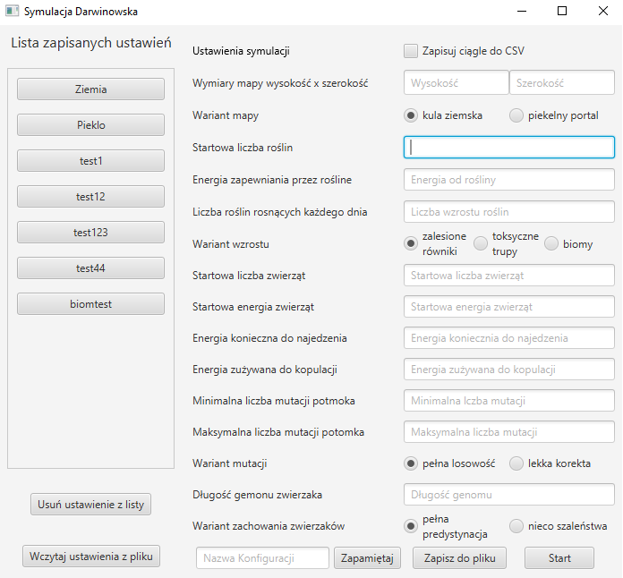
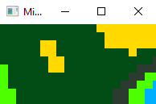

Darwinian simulation

A short video showing how the project works
Introduction
This simulation was written as part of a credit project from a college course called “Object Oriented Programming.” It was done in a team of 3 people. Simulation assumptions:
- At the start, the user sees a UI that allows him to customize selected parameters (number of animals, type of map, number of plants)
- Settings can be saved and loaded from a file
- Animals are randomly generated on the board with a preset initial health (marked with a bar)
- The animal has a random genotype, which determines how the animal moves
- When two animals enter one field and have the appropriate health reproduction occurs, and the genotype of the child is a random combination of the genotypes of the parents (dependent on their health)
- At any time during the simulation, we can view statistics
- After stepping on an animal, we can track it (see its genotype)
- To check how beautifully our map was generated we can use the minimap
You can choose different variations of our simulation. The most interesting one is biomes, the map is procedurally divided into appropriate biomes (desert, swamp, jungle, forest, ice and snow), depending on the biome the simulation rules change.
- Desert - instead of plants grow cacti, which take away the health of our animals
- Swamp - the animal gets stuck in the mud, it takes two turns to move
- Jungle - more and better plants grow, when eaten the animal gets more health
- Forest - standard rules
- Ice - the animal slides, walking two bars, no plants
- Snow - stumps grow instead of plants, which give less health, in addition, it snows so every turn health is taken away
My tasks that I dealt with within the project
- Main menu with the possibility of saving the selected configuration and loading it from a file Link 
- All functionalities associated with the animal class (e.g., ability to eat, reproduce, die, give birth, draw genotype) Link
- A variant of the simulation in which biomes are procedurally created Link
- A minimap that allows us to keep track of what the distribution of biomes looks like on our map.Link 

Source